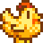
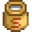
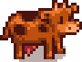

Hayvanlar

|
Eksik çeviri Bu makale veya bölüm tamamen Türkçeye çevrilmemiştir. Çevirisine yardımcı olmak için düzenleyerek bekleyin. |
Hayvanlar çiftliğinizde bir çok farklı ihtiyacı karşılar. Bazıları, etkileşime giremeyeceğiniz yabani hayvanlardır. Arkadaşlık edebileceğiniz, kedi ya da köpek, bir evcil hayvana sahip olabilirsiniz. Binip sürebileceğiniz bir ata sahip olabilirsiniz. Ve tabi ki, bir çok farklı kâr getiren ürünün kaynağı olan çeşitli "çiftlik hayvanları" satın alabilirsiniz.
Çoğu hayvan (evcil veya yabani hayvanlar hariç), onları barındıracak bir binaya ihtiyaç duyar. Bu binalar, Robin'in evinde bulunan Marangoz Atölyesi'nden yaptırılabilir ve genellikle her birinin inşa edilmesi için üç gün gerekir. Yavru "çiftlik hayvanları" (ve mahsul toplamak için gerekli olan ekipmanlar) daha sonra Marnie'nin Çiftliği'nden satın alınabilir. Yumurta veren hayvanlar bir kuluçka makinesi yardımıyla yumurtadan çoğaltılabilir. Bir hayvan satın alınır alınmaz, evi olarak kullancağı, doğru türde mevcut bir çiftlik binasına tahsis edilmelidir. Her bir çiftlik binasının ev olarak hizmet verebileceği hayvan sayısı için bir sınırı vardır. Daha sonra bir hayvanının evi olarak kullandığı binayı değiştirmek isterseniz, onu sevdiğinizde beliren bilgi kutusu üzerinde bu değişikliği yapabileceğiniz bir buton bulunmaktadır.
Bebek çiftlik hayvanları, hayvansal ürünler üretebilmeleri için önce yetişkin olmaları gerekir. Her sabah kümeslerde yaşayan yetişkin hayvanlar (tavuk, ördek, tavşan ve dinozor) binalarının zemininden toplanabilecek ürünler üretme şansına sahiptir. Süt Kovası kullanılarak, inekler genellikle her gün sağılabilir ve keçiler genellikle iki günde bir sağılabilir. Koyunlar, yünleri büyüdüğünde Makas ile kırkılabilir ve domuzlar, daha sonra ahırdan alabileceğiniz yer mantarlarını kazmaları için dışarıya bırakılabilir.
Evcil Hayvanlar
Yeni Çiftlik
Oyuncunun, Karakter Oluşturma ekranında seçtiği karaktere bağlı olarak bir kedi ya da köpek edinmesine izin verilir. Birkaç farklı kedi ve köpek stili vardır.
Baharda ilk güneşli Çarşamba veya Cuma sabahı  1.000g kazandıktan sonra Marnie'nin bir köpek veya kediyle çiftliğin kapısında beklediği bir ara sahne tetiklenecektir. Bu etkinliği tetiklemek için Çiftlik Evinden sabah 6 ile 9.30 arasında çıkılmalıdır. Baharın 20'sine kadar, oyuncunun yeterince para kazanıp kazanmadığına bakılmaksızın etkinlik tetiklenecektir. Evcil hayvanı evlat edinmek isteğe bağlıdır. Evcil hayvan için sahiplenildiği anda herhangi bir isim seçilebilir, ancak sahiplenildikten sonra ismi değiştirilemez. Oyuncu bu ara sahneden önce Marnie ile henüz tanışmamışsa, buluşma bir tanışma olarak sayılacaktır.
1.000g kazandıktan sonra Marnie'nin bir köpek veya kediyle çiftliğin kapısında beklediği bir ara sahne tetiklenecektir. Bu etkinliği tetiklemek için Çiftlik Evinden sabah 6 ile 9.30 arasında çıkılmalıdır. Baharın 20'sine kadar, oyuncunun yeterince para kazanıp kazanmadığına bakılmaksızın etkinlik tetiklenecektir. Evcil hayvanı evlat edinmek isteğe bağlıdır. Evcil hayvan için sahiplenildiği anda herhangi bir isim seçilebilir, ancak sahiplenildikten sonra ismi değiştirilemez. Oyuncu bu ara sahneden önce Marnie ile henüz tanışmamışsa, buluşma bir tanışma olarak sayılacaktır.
Ek Evcil Hayvanlar
İlk evcil hayvanla maksimum arkadaşlığa ulaştıktan veya evcil hayvan olmadan 2. Yıla ulaştıktan sonra, oyuncu Marnie'nin Çiftliğinden evcil hayvan lisansları satın alarak başka evcil hayvanlar sahiplenebilir.[1] Kedi ve köpeklerin her biri  40.000g'dır. Ayrıca biri
40.000g'dır. Ayrıca biri  60.000g ve diğeri
60.000g ve diğeri  500.000g olmak üzere iki çeşit kaplumbağa vardır. Oyuncu her yeni evcil hayvan için Marangoz Atölyesinden bir tane daha açık hava Hayvan Minderi inşa etmelidir, böylece o evcil hayvanla arkadaşlığını kaybetmez. Artık istenmeyen evcil hayvanlar, üzerlerinde Kelebek Tozu kullanılarak çiftlikten çıkarılabilir.
500.000g olmak üzere iki çeşit kaplumbağa vardır. Oyuncu her yeni evcil hayvan için Marangoz Atölyesinden bir tane daha açık hava Hayvan Minderi inşa etmelidir, böylece o evcil hayvanla arkadaşlığını kaybetmez. Artık istenmeyen evcil hayvanlar, üzerlerinde Kelebek Tozu kullanılarak çiftlikten çıkarılabilir.
Kedi ve Köpek
Kedi ve Köpeklere Şapka takılabilir.

Boş evcil hayvan kabı

Dolu evcil hayvan kabı


Kaplumbağa
Kaplumbağalara şapka takılamaz.
Arkadaşlık
Evcil hayvanın maksimum 1000 arkadaşlığı vardır ve her sevildiğinde 12 artar. Her 200 puan 1 seviyeye eşittir ve 999 arkadaşlık puanına sahip olmak oyuncuyu Büyükbaba'nın Değerlendirmesinde 1 puan almaya hak kazandırır. Evcil hayvanı sevmek için her gün bir kez üzerine tıklayın.
Evcil hayvanla 1000 arkadaşlık puanına ulaştıktan sonra aşağıdaki mesaj açılır: " <Hayvan Adı> seni seviyor ♡" Duraklatıldığında Hayvanlar menüsünden evcil hayvan ile arkadaşlığı kontrol edebilirsiniz.
Çiftlikteki bazı ahşap döşemelerin üzerinde bir Hayvan Minderi vardır. Standart, orman, Yaban Tepebaşı, ve Irmak çiftliklerinde evin yanındaki sol üst alandadır. Dört köşe çiftliğindeki farklı bölümlerin kesiştiği yerde, Sahil Çiftliğinde sağ kıyının hemen üstünde ve Çayır Çiftliğinin sağ alt bölümündedir. Kase evcil hayvan için su ile doldurulabilir. Evcil hayvanın kabını sulamak, ertesi sabaha kadar evcil hayvanın arkadaşlığını 6 puan artıracaktır. Ertesi sabah yağmur yağıyorsa bunun tetiklenmeyeceğini unutmayın. Yağmurlu günlerde, evcil hayvanın kabı otomatik olarak dolacaktır. Bir evcil hayvan sahiplenmeden önce yağmur yağarsa, kase bir evcil hayvan sahiplenene kadar dolu kalacaktır.
İnsan NPC'lerden farklı olarak, bir evcil hayvanı görmezden gelmek veya üzerinde sapan kullanmak arkadaşlığı azaltmaz. Bir evcil hayvanın kendi Hayvan Minderine sahip olmadığı her gece, ertesi sabah 10 arkadaşlık puanı kaybedecektir.[2]
Evcil Hayvan Hediyeleri
Maksimum arkadaşlığa ulaştıktan sonra, her evcil hayvan her gün ilk kez sevildiğinde oyuncuya hediye olarak yere eşya bırakabilir. Her gün bir evcil hayvanın hediye düşürme ihtimali %20'dir.[3] Kasabalılar dan posta yoluyla gönderilen hediyeler gibi, evcil hayvanın düşürdüğü hediye de aynı gün yeniden yüklendiğinde rastgele belirlenir. Aşağıda listelenen şanslar, herhangi bir hediyenin düşmesi için %20'lik şansı geçtikten sonra, bir hediyenin seçilme olasılığını yansıtır.
| Evcil Hayvan Hediyeleri | ||||||||||||||||||||||||||||||||||||||||||||||||||||||||||||||||||||||||||||||||||||||||||||||||||||||||||||||||||||||||||||||||||||||||||||||||||||||||||||
|---|---|---|---|---|---|---|---|---|---|---|---|---|---|---|---|---|---|---|---|---|---|---|---|---|---|---|---|---|---|---|---|---|---|---|---|---|---|---|---|---|---|---|---|---|---|---|---|---|---|---|---|---|---|---|---|---|---|---|---|---|---|---|---|---|---|---|---|---|---|---|---|---|---|---|---|---|---|---|---|---|---|---|---|---|---|---|---|---|---|---|---|---|---|---|---|---|---|---|---|---|---|---|---|---|---|---|---|---|---|---|---|---|---|---|---|---|---|---|---|---|---|---|---|---|---|---|---|---|---|---|---|---|---|---|---|---|---|---|---|---|---|---|---|---|---|---|---|---|---|---|---|---|---|---|---|---|
| ||||||||||||||||||||||||||||||||||||||||||||||||||||||||||||||||||||||||||||||||||||||||||||||||||||||||||||||||||||||||||||||||||||||||||||||||||||||||||||
At

At, +%30 hareket hızı artışı sağlayan oyu içi bir araçtır. At ahırı Marangoz Atölyesi'ndan satın alınarak elde edilir. Evcil hayvanlar gibi, ata da isim verilebilecektir ancak komut yalnızca ata ilk kez binmeye çalışıldığında verilir ve değiştirilemez.
Atınızı bir yerde bırakırsanız o sizi bekleyecektir ve geri döndüğünüzde "<Atın ismi> senin nerede olduğunu merak ediyor." ya da "Senin sadık atın sabırla senin dönüşünü bekliyor." mesajını alacaksınız. Atınızı çiftliğin dışında bırakıp uyursanız atınız otomatik olarak ahırının yolunu bulur ve ertesi sabah atınızı ahırında bulabilirsiniz.
At, yatay olarak seyahat ederken normal tüm boşluklardan geçebilir, ancak dikey olarak seyahat etmek için 2 karelik bir alana ihtiyaç duyar (atın geçebileceği kapılar hariç), yani at üzerindeyken, yayayken geçebileceğiniz yerlerden geçemeyebilirsiniz. Çiftlikte ekinlerin arasından geçerken at yavaşlamaz.
Şapkalar atlara takılabilir. Şapkalar envanterden başka bir şapka seçilerek ve ata tıklanarak çıkarılabilir. (Seçilen şapka envanterde kalır.)
Eğer kahve içerseniz at hız kazanır.
Aşağıdaki öğelerle at üzerindekeyken etkileşime geçilebilir.
- Kapı - Açılıp kapatılabilir.
- Kümes ve Ahır - Hayvan kapıları açılıp kapatılabilir.
- Gönderme Kutusu - Eşyalar koyulabilir.
- Balık Havuzu - Eşya toplama, balık ekleme, görev eşyaları ekleme, görünüm değiştirme ve havuzu boşaltma.
- Kasabalılar: Kasabalılarla konuşabilir.
- Evcil Hayvanlar: Sevilebilir.
At Flütü atı oyuncuya ışınlanmak için kullanılabilir. Sadece dış mekanda çalışır (Zencefil Adası ve Çöl dahil).
At, günün geri kalanında  Hız (+0.4) artırmak için bir havuç ile beslenebilir. At Kitabı okumak atın
Hız (+0.4) artırmak için bir havuç ile beslenebilir. At Kitabı okumak atın  Hız (+0.5) hızını kalıcı olarak artıracaktır.
Hız (+0.5) hızını kalıcı olarak artıracaktır.
Şapkalar atların üzerine yerleştirilebilir.
Hayvan Bakımı
Arkadaşlık

Barınaklarda yaşayan hayvanların arkadaşlık derecesi hayvana sağ tıklayarak görülebilir (saman tutarken bu arayüz açılmaz, yanlışlıkla bu arayüzü çok sık açıyorsanız faydalı olabilir.). Arkadaşlık derecesi 5 kalp üzerinden değerlendirilir (yarım kalp artışlarıyla gösterilir) ve o hayvanın ne kadar kaliteli ürün vereceği hesaplanırken dikkate alınır.
Her yarım kalp 100 arkadaşlık puanına denktir, maksimum 1000 arkadaşlık puanına ulaşılabilir.
Aşağıdaki eylemler arkadaşlığı etkiler:
- Sevmek (+15, eğer oyuncu "Çoban" ya da "Kümes Sahibi" yeteneği varsa ve hayvan uygun bir türse +30 )
- Süt sağmak ya da yün kırpmak (+5, sağılmamak ya da kırpılmamak düşürmez)
- Dışarıda çimen yemek (+8)
- Beslememek (-20, gün sonunda hesaplanır)
- Gece dışarıda kalmak (-20, gün sonunda hesaplanır)
- Sevmemek (-5'ten -10'a kadar, gün sonunda formüle göre hesaplanır: (10 - (Şimdiki Arkadaşlık / 200)), yani arkadaşlık puanınız ne kadar yüksekse o kadar az arkadaşlık puanı kaybedersiniz.)
Mutluluk
Arkadaşlık gibi, bir hayvanın anlık mutluluk hayvanı sevdikten sonra sağ tıklayarak kontrol edilebilir.
Mutluluk, hayvanın ürettiği ürünün kalite ve tipini belirleyen çok önemli bir etkendir. Oyun sadece ürün günün başlangıcında oluşuyorsa bunu dikkate alır, yoksa hiçbir etkisi olmaz.
Mutluluk 0 ile 255 arasında bir değer alır. Bu değeri hayvana sağ tıkladığınızda çıkan diyalogtan anlayabilirsiniz:
- <Hayvanın Adı> bugün gerçekten mutlu görünüyor! mutluluğun 200 ile 255 arasında olduğunu gösterir.
- <Hayvanın Adı> iyi görünüyor. mutluluğun 30 ile 200 arasında olduğunu gösterir.
- <Hayvanın Adı> üzgün görünüyor. mutluluğun 0 ile 30 arasında olduğunu gösterir.
Mutluluğu etkileyen olaylar aşağıda sıralanmıştır. ("her 10 dakikada bir" tabiri oyun içi zamanı gösterir):
- Sevmek (hayvan türüne bağlı olarak +32'den +36'ya kadar, oyuncu çoban ya da kümes sahibi yeteneği ile bu sayıyı iki katına çıkartabilir.)
- Dışarıda çimen yemek (Mutluluğu 255'e çıkartır.)
- Kışın hayvanın bulunduğu ortamda ısıtıcı varsa ve mutluluk 150 ya da daha yüksekse (her 10 dakikada bir +4'ten +8'e kadar). Sadece bir ısıtıcı gereklidir. Diğer tüm "her 10 dakikada bir" etkenlerini iptal eder.
- Hayvanı beslemek (+4'ten +16'ya kadar hayvanın türüne bağlıdır. Oyuncu uyuduğunda hesaplanır. Hayvanın saman ya da çimen yemesi gerekir.)
- Saat 18'le 19 arasında dışarıda olan ve mutluluk 150'nin altında olan hayvan (her 10 dakikada bir +4'ten +8'e kadar. Başka bir "her 10 dakikada bir" etkeni ile birleşmez.).
- Yağmurda ya da kışın dışarıda olan hayvan (her 10 dakikada bir -4'ten -8'e kadar. Başka bir "her 10 dakikada bir" etkeni ile birleşmez.).
- Saat 19'dan sonra dışarıda olan hayvan (her 10 dakikada bir -4'ten -8'e kadar. Başka bir "her 10 dakikada bir " etkeni ile birleşmez.).
- Dışarıda uyuyan hayvan (-Anlık mutluluğun yarısı. Oyuncu uyuduğunda hesaplanır.)
- Hayvanı sevmemek (-20'den -40'a kadar hayvanın türüne bağlıdır. Oyuncu uyuduğunda hesaplanır.)
- Hayvanı beslememek (-100. Oyuncu uyuduğunda hesaplanır.)
Üretim
Yeni hayvanlar yetişkin olana kadar üretime başlayamazlar. Her hayvan türünün üretim yapması için gereken süre birbirinden farklıdır. Mesela, inekler ve tavuklar her gün süt ve yumurta üretebilirler ve keçiler gün aşırı süt verirler. Büyük ya da lüks ürün üretebilen hayvanlar bazen daha sık ürün verebilirler (aşağıdaki "Özel Durum'a" bakınız).
Bir hayvan ürününü üretmek için gereken gün sayısını karşıladıysa, ürünü üretip üretmeyeceğini belirlemek için bazı ek kontroller yapılacaktır.
- Hayvan beslenmediyse, ürün üretilmez.
- Hayvanın mutluluğu 70'in altındaysa ürünün üretilmeme ihtimali vardır. Mutluluk ne kadar düşükse ürün üretilmeme ihtimali o kadar yükselir (Oran "Mutluluk/70" olarak hesaplanır.)
Bir hayvanın büyük ya da lüks ürün verip veremeyeceği veya ürünün kalitesi günün en başında şans faktörünün yanı sıra mutluluk ve arkadaşlık kombinasyonu ile belirlenir[4].
- Bir hayvanın mutluluk 150'nin üzerinde ise o hayvan kaliteli ve büyük ya da lüks ürünler ya da lüks ürünler üretebilirler. (Bu sadece hayvanın üretip üretememesidir, asıl ihtimaller aşağıdadır. Kaliteli ve büyük ya da lüks ürünler garanti değildir.)
- Bir hayvanın mutluluk 150'nin altında ise o hayvan hala kaliteli ve büyük ya da lüks ürünler ya da lüks ürünler üretebilirler. (Bu ürünleri üretme ihtimali mutluluk/150'dir.)
Özel Durum: Bir hayvan bir şey üretmek için gereksinimleri karşılamış ancak kaliteli veya büyük ya da lüks ürün üretme yeteneğini kazanmamışsa, oyun o gün bir ürün ürettiğini kaydetmez. Bu durumda normalde üretilmesi birkaç gün sürecek olan ürünler ertesi gün tekrardan üretilecektir.
Lüks ve Büyük Ürünler
"Mutluluk Çarpanı" lüks ürünler (büyük ürünler, ördek tüyü ve tavşan ayağı) üretilirken aşağıdaki gibi hesaplanır:
- mutluluk 200'den büyükse 1.5 ile çarpılır.
- mutluluk 100'e eşit ya da altındaysa "Mutluluk Çarpanı" hayvanın "mutluluk-100" (her zaman negatif ya da 0'a eşit olur) olarak hesaplanır.
- Diğer hallerde (mutluluk 100 ile 200 arasındayken) "Mutluluk Çarpanı" 0 olur.
"Mutluluk Çarpanı" hayvandan hayvana farklı şekillerde kullanılır.
Daha yüksek ihtimal için mutluluğu 200'ün üzerinde tutmaya çalışın.
Ördek Tüyleri ve Tavşan Ayakları
Ördekler ve tavşanların lüks ürünler üretip üretemeyeceğini hesaplamak için günlük şans hesaba katılır.
Her bir tavşan için toplam puan bu formülle hesaplanır: (Arkadaşlık + Mutluluk × Mutluluk Çarpanı)/5000 + Günlük Şans
Her bir ördek için toplam puan bu formülle hesaplanır: (Arkadaşlık + Mutluluk × Mutluluk Çarpanı)/4750 + Günlük Şans
Mesela, bir tavşanın 600 arkadaşlığı (3 Kalp), 150 mutluluk ve 0.10 günlük şansı varsa aşağıdaki gibi hesaplanır:
=(600 + (150 × 0))/5000 + 0.10
=(600 + 0)/5000 + 0.10
=0.22
Her seferinde 0 ile 1 arasında rastgele bir sayı seçilir ve bu puanla karşılaştırılır. Eğer puan rastgele sayıdan daha büyükse bir lüks ürün üretilir. Maksimum arkadaşlık, mutluluk ve şans ile tavşan ayağının %40 ve ördek tüyünün %42 üretilme ihtimali vardır.
Büyük Yumurtalar ve Süt
Hayvanların büyük ürünler üretmesi için oyun mutluluk ve arkadaşlık dikkate alınır.
Sadece 200 ya da daha yüksek arkadaşlık seviyesine sahip hayvanlar büyük ürünler üretebilir.
Her bir hayvan için toplam puan bu formülle hesaplanır: (Arkadaşlık + Mutluluk Çarpanı)/1200
Mesela, bir hayvanın 600 arkadaşlığı (3 Kalp) ve 210 mutluluk varsa aşağıdaki gibi hesaplanır:
=((600 + (210*1.5))/1200
=(600+315)/1200
=0.7625
Her seferinde 0 ile 1 arasında rastgele bir sayı seçilir ve bu puanla karşılaştırılır. Eğer puan rastgele sayıdan daha büyükse bir büyük ürün üretilir. Örneğimizde yaklaşık %76 ihtimalle bir büyük ürün üretilir. En az 1200 puana sahip olursanız büyük ürün üretilme ihtimali %100 olur.
Kalite
Bir hayvan kaliteli bir ürün üretebiliyorsa, kalite normalden iridyuma kadar bir kalitede olur[4].
Her bir hayvan için toplam puan bu formülle hesaplanır: ((Arkadaşlık/1000) - (1 - (Mutluluk/225))
Mesela, bir hayvanın 600 arkadaşlığı (3 Kalp) ve 150 mutluluk varsa aşağıdaki gibi hesaplanır:
=((600/1000) - (1 - (150/225))
=0.6 - (1 - 0.666...)
=0.6 - 0.333...
=0.266...
Oyuncu çoban ya da kümes sahibi yeteneğine sahipse tüm hayvanlar için puana 0.333 eklenir.
Oyun ürünün kalitesini belirlemek için puanın 0.95'in üzerinde olup olmadığını kontrol eder. Eğer üzerindeyse puanın yarısı ve 0 ile 1 arasından seçilen rastgele bir sayı ile karşılaştırılır. Puanın yarısı rastgele sayıdan büyükse ürün iridyum kalitede olur.
- Verilen örneğimizde puan (0.266...), 0.95'in üzerinde olmadığı için bu ürünün iridyum kalitede olma ihtimali yoktur.
İridyum kalite ürün üretilemezse, puanın yarısı alınır ve 0 ile 1 arasından seçilen rastgele bir sayı ile karşılaştırılır. Puanın yarısı rastgele sayıdan büyükse ürün altın kalitede olur.
- Verilen örneğimizde puanın yarısı 0.133... olduğu için, yaklaşık %13 ihtimalle ürün altın kalitede olur.
Altın kalite ürün üretilemezse, puan 0 ile 1 arasından seçilen rastgele sayı ile karşılaştırılır. Puan rastgele sayıdan daha büyükse ürün gümüş kalitede olur.
- Verilen örneğimizde, ürün altın kalitede değilse, puan 0,266... olduğu için yaklaşık %26.6 ihtimalle gümüş kalitede olur.
Ürün gümüş kalitede de değilse, ürün normal kalitede olur.
Barınma
Barınaklar Marangoz Atölyesi'nden satın alınabilir ve 3 günde tamamlanır. Yerleştirildikten sonra barınakların yeri Marangoz Atölyesi'nden değiştirilebilir.
Ahır, kümes ve balçıkça kümesi hayvanlara ev sahipliği yapar, silo saman depolar ve at ahırı ata ev sahipliği yapar.
2 ya da daha fazla kümes ya da ahır varsa, hayvanlar ev görseli seçilerek yer değiştirilebilir.
Yemek
Barınaklarda yaşayan çiftlik hayvanları her gün bir porsiyon yem tüketir. Bu porsiyon çimen ya da saman (içeride tutulur ya da çimen bulamazlarsa) olabilir[5][6]. Beslenmezlerse ölmezler ancak üzgün olurlar ve tekrar beslenmeye başlayana kadar üretimi durdururlar. Festival günleri (Akşam Pazarı hariç) beslenmeye ihtiyaç duymazlar. Hiç saman ya da çimen yemeseler bile oyun onları beslenmiş sayar
Yumurtadan yeni çıkmış, doğmuş ya da satın alınmış hayvanların çiftliğe geldiği gün beslenmeye ihtiyaç duymazlar. Devam eden günlerde yavru hayvanlar (yetişkin hayvanlar gibi) bir porsiyon yem tüketir. Beslenmezlerse o gün büyümezler.
Çiftlik hayvanları taze çimeni samana tercih ederler ve taze çimen yedikten sonra mutluluğu "Bugün çok mutlu" (en iyi mutluluk) olur. Hayvanlar kışın, hava yağmurluyken, fırtınalıyken ya da karlıyken dışarıya çıkmazlar. İçeride kalan ya da yiyecek çimen bulamayan hayvanlar mümkünse saman yerler. Kışın hayvanların taze yem bulmaları neredeyse imkansızdır (çiftlikteki tüm çimen ve buğdaylar kışın ilk günü yok olur), bu nedenle güzün olabildiğince çok saman hazırlamanız tavsiye edilir.
Balçıkça kümesindeki balçıkçalar yeme ihtiyaç duymaz ancak yalakları her gün sulama kabı ile sulanabilir. Sulandıklarında ertesi gün balçıkça topu üretirler.
Atlar ve evcil hayvanlar yeme ihtiyaç duymaz ancak yalaklarını her gün doldurursanız daha mutlu olurlar.
Dışarıda Kalmış Hayvanlar
Barınaklarından dışarı çıkan hayvanlar normalde saat 18'de barınaklarına uyumak için dönerler. Akşamları barınakların kapılarını kapatmak ertesi gün sabah hayvanların hemen dışarıya çıkmasını engelleyerek onları sevmek ve onlarla ilgilenmek için size yeterli zamanı verir. Tüm hayvanlar barınaklarına ulaşmadan kapıyı kapatırsanız, gece dışarıda kalan hayvanlar vahşi hayvanların saldırılarına karşı savunmasız kalırlar.
Bir hayvanın dışarıda kalmasına neden olan koşullar tam olarak net değildir. Oyuncunun saat 17'den sonra (hayvanların barınaklarına dönmeye başladıkları zaman) çiftliği terk etmemesi ve saat 17'den sonra barınağa girmemesi durumunda, bir hayvanın dışarıda kalması daha olası olabilir. Çiftlikten ayrılmak ve saat 17'den sonra barınağa girmek, hayvanların otomatik olarak barınağın içine ışınlanmasına neden oluyor gibi görünüyor. Oyuncunun saat 17'den önce yatması da sebeplerden birisi olabilir.
Ertesi gün yağmur yağarsa ve hayvan dışarıda kalmışsa, hayvan dışarıda yağmurda kalır. Bu, bir çiftlik hayvanının yağmur sırasında dışarıda olacağı tek örnektir. Aynı şekilde bir hayvan güzün 28. günü gece dışarıda kalırsa, hayvan kışın ilk günü dışarıda kalır.
Barınağının dışında kalmış olan hayvan ertesi gün huysuz olur.
Huysuz Hayvan

Yağmurda Hayvan
Kışın Hayvan
Vahşi Hayvan Saldırıları
Bir hayvan gece barınağının dışında kalırsa (önceki bölüme bakınız), gece dışarıda kalan hayvana vahşi hayvanlar saldırabilir[7].
Oyuncu uyuduktan sonra, gece boyunca gerçekleşecek olaylar (yığın etkinlikleri gibi) normal olarak hesaplanır. Herhangi bir olay meydana gelmezse, oyun %50 ihtimalle vahşi hayvan saldırısı olayını başlatır. Bu olay başlarsa, oyun kapıları kapalı ve dışarıda hayvan kalmış bir barınak arar.
Her bir barınak için, oyun 0 ile 1 arasında rastgele bir sayı seçer ve 1/(toplam barınak sayısı) ile karşılaştırır. Rastgele sayı daha büyükse barınak es geçilir. Başka bir deyişle oyuncu ne kadar çok barınağa sahip olursa saldırı ihtimali o kadar azalır. Mesela oyuncunun 2 tane barınağı varsa her bir barınağın saldırıya uğrama ihtimali %50, 3 tane barınağın %33 ve 4 tane barınağın %25'tir.
Bir barınak seçildiğinde, o barınakta dışarıda kalmış ilk hayvan saldırının hedefi olarak seçilir. O hayvan sabaha oyundan silinir ve diğer tüm hayvanların mutluluk mesajı "<hayvanın ismi> bugün stresli ve paranoyak gözüküyor. Dün gece kötü bir şey olmuş gibi." olur.
Hayvan Doğumları
Vahşi hayvan saldırıları gibi, gece meydana gelen başka bir olay yoksa %50 ihtimalle oyun hayvan doğumu olayını başlatır. Oyun dolu olmayan bir ahır arar. Sonra %0.55 * (içerideki hayvan sayısı) hesaplanır. Örneğin, ahırda 3 hayvan varsa %1.65 ihtimalle bu ahır seçilirdi. Eğer bu ahır seçilmezse hiçbir ahır kalmayana kadar bu işlemler tüm ahırlara uygulanır.
Eğer ahır seçilirse, içeriden rastgele bir hayvan seçilir. Seçilen hayvan bebek değilse ve hamilelik mümkünse o hayvan doğum yapar.
Hayvan Satmak
Bir çiftlik hayvanını satmak için hayvanı sevdikten sonra sağ tıklayın. Arkadaşlık/mutluluk ara yüzü açılacaktır. İmleci sağdaki altın butonuna getirerek bu hayvanı kaç altına satabileceğinizi öğrenebilirsiniz. O butona basarak ve devamında onaylarsanız satışı tamamlamış olursunuz.
Bir çiftlik hayvanının satış fiyatı Fiyat × ((Arkadaşlık / 1000) + 0,3).[8]
"Fiyat" oyunun veri dosyasından okunur Data/FarmAnimals.xnb.
Kümes Hayvanları
Bu hayvanlar çiftliğinize kümes inşa etmeden satın alınamaz, ve kümeste yer işgal ederler. Ürünleri her sabah kümesin içinde bulabilirsiniz.
Tavuklar
- Ana makale: Tavuk
Yetişkin tavuklar beslenirlerse her sabah yumurtlarlar. Daha mutlu tavuklar daha büyükler ve daha değerli yumurta yumurtlarlar.
| Görsel | İsim | Değer | Üretilen | 5 Kalp Satış Fiyatı |
|---|---|---|---|---|
| Tavuk | ||||
| Tavuk | ||||
| Tavuk | ||||
| Boşluk Tavuğu | N/A | |||
|  | Altın Tavuk | N/A |
Marnie'den satın aldığınız tavuklar rastgele beyaz ya da kahverengi olabilirler.
Shane'in 8 kalp etkinliğinden sonra Marnie'den satın alınan tavukların mavi olma olasılığı 1/4'tür. Görünüşleri haricinde, mavi tavukların beyaz tavuklardan hiçbir farkı yoktur.
Renk fark etmeksizin beyaz ya da kahverengi yumurtalardan; beyaz, kahverengi ya da mavi (mavi tavuklar açıldıysa) tavuklar elde edilebilir
Boşluk tavuğu, siz uyurken rastgele bir olay sırasında, bir cadı kümeslerinizden birinin üzerinden geçer ve bir boşluk yumurtası bırakır. Alternatif olarak bir boşluk yumurtası lağımda Krobus'tan  5.000g'a satın alınabilir. Shane'le evlenirseniz size bir boşluk yumurtası hediye edebilir. Boşluk yumurtası elde edildikten sonra, kuluçka makinesi (büyük kümes gereklidir) kullanılarak boşluk tavuğu elde edilir.
5.000g'a satın alınabilir. Shane'le evlenirseniz size bir boşluk yumurtası hediye edebilir. Boşluk yumurtası elde edildikten sonra, kuluçka makinesi (büyük kümes gereklidir) kullanılarak boşluk tavuğu elde edilir.
Altın yumurta ve altın tavuk elde etmek için ilerleme kaydetmeniz gerekmektedir. Ardından Marnie'nin Çiftliği'nden  100.000g'a, Bay Qi'nin Ceviz Odası'ndan
100.000g'a, Bay Qi'nin Ceviz Odası'ndan  100'na satın alınabilir ya da cadı etkinliği ile elde edilebilir.
100'na satın alınabilir ya da cadı etkinliği ile elde edilebilir.
Ördek
- Ana makale: Ördek
Yetişkin ördekler gün aşırı yumurtlar ya da ördek tüyü düşürür. Daha mutlu ördeklerin yumurta yerine ördek tüyü düşürme olasılığı artar.
| Görsel | İsim | Değer | Gereksinimler | Üretilen | 5 Kalp Satış Fiyatı |
|---|---|---|---|---|---|
| Ördek | Big Coop |
Tavşanlar
- Ana makale: Tavşan
| Görsel | İsim | Değer | Gereksinimler | Üretilen | 5 Kalp Satış Fiyatı |
|---|---|---|---|---|---|
| Tavşan | Deluxe Coop |
Yeterli arkadaşlık seviyesine ulaştıktan sonra yün gibi tavşan ayağı da üretebilirler.
Dinozorlar
- Ana makale: Dinozor
Dinozor elde etmek için, dinozor yumurtası bulmalı ve ardından kuluçka makinesine yerleştirilmelidir. Yaklaşık 12.5 gün içinde bir dinozor yumurtadan çıkacak.
Dinozor, diğer kümes hayvanları gibi davranır ancak 7 günde bir dinozor yumurtası üretir ve ses çıkarmaz.
| Görsel | İsim | Değer | Gereksinimler | Üretilen | 5 Kalp Satış Fiyatı |
|---|---|---|---|---|---|
| Dinozor | n/a | Big Coop |
Ahır Hayvanları
Bu hayvanlar, çiftliğinize bir Ahır inşa edilene kadar satın alınamaz ve bir ahırda bir yer tutarlar. Ürünleri aletlerle toplanır, domuzlar ise otlanırken dışarıda yerden çıkarırlar.
Ahır hayvanları, durum menüsünde hamilelik seçeneği etkinleştirildiyse rastgele hamile kalabilir. Bu, önce ona sevgi vermek için hayvanla etkileşime girdikten sonra açılır. Menünün sağındaki bir simge, o hayvan için hamileliğe izin verecek şekilde değiştirilebilir. Bir hayvan hamile kalırsa, gece boyunca bir hayvanın doğum yaptığını söyleyen bir mesaj alınacaktır. Oyun daha sonra sizden yeni hayvan için bir isim seçmenizi isteyecektir. Hamileliğin gerçekleşmesi için Büyük Ahıra yükseltmeniz ve başka bir hayvan için yeterli alana sahip olmanız gerekir.
İnekler
- Ana makale: İnek
| Görsel | İsim | Değer | Üretilen | 5 Kalp Satış Fiyatı |
|---|---|---|---|---|

|
İnek |  Büyük Süt - |
||
|  | İnek |
Keçiler
- Ana makale: Keçi
| Görsel | İsim | Değer | Gereksinimler | Üretilen | 5 Kalp Satış Fiyatı |
|---|---|---|---|---|---|

|
Keçi | Büyük Ahır | Keçi Sütü - 225g Büyük Keçi Sütü - 345g |
Keçiler gün aşırı süt verir.
Koyunlar
- Ana makale: Koyun
| Görsel | İsim | Değer | Gereksinimler | Üretilen | 5 Kalp Satış Fiyatı |
|---|---|---|---|---|---|

|
Koyun | Kocaman Ahır |
Koyunun yünü uzadıkça kırpılması gerekir. Marnie'nin Çiftliği'nden makas satın alınabilir.
Bir koyun normalde düzenli beslenirse ve en az 70 mutluluğa sahipse 3 günde bir yünü uzar.
Oyuncu bir koyunla 900 ya da daha fazla arkadaşlık seviyesine sahipse ve en az bir defa onu sevdiyse, üretim süresi gün aşırıya kadar düşer.
Oyuncunun çoban yeteneği varsa, koyunun yününün uzaması için gereken süre daha da kısalarak her gün yünü tekrar uzar.
Domuzlar
- Ana makale: Domuz
| Görsel | İsim | Değer | Gereksinimler | Üretilen | 5 Kalp Satış Fiyatı |
|---|---|---|---|---|---|

|
Domuz | Kocaman Ahır |
Domuzlar dışarı çıktıklarında yermantarı bulurlar. Yermantarı, yağ üreteci kullanılarak yermantarı yağı üretilebilir.
Yermantarı toplamak toplayıcılık yeteneği ile ilgilidir. Bu nedenle iridyum kalite ve çift hasat edilme ihtimali vardır.
Kışın domuzlar, arazi karla kaplı olduğu için ve ahırdan ayrılmadıkları için yermantarı üretemezler.
Devekuşları
- Ana makale: Deve Kuşu
| Görsel | İsim | Değer | Gereksinimler | Üretilen | 5 Kalp Satış Fiyatı |
|---|---|---|---|---|---|

|
Deve Kuşu | Yok | Ahır |
Balçıkça Kümesi
- Bakınız: Balçıkça Kümesi
Diğer Hayvanlar
Birçok hayvan oyun boyunca görünebilir, ancak tavşanlar, sincaplar, kurbağalar, kargalar, ağaçkakanlar, serçeler ve kelebekler gibi hayvanlarla etkileşime girilemez. Sincaplar zaman zaman fındık veya diğer ağaç tohumlarının yere düşmesine neden olabilir. Tavşanlar ahududu ya da böğürtlen mevsimlerinde çalılara vurarak meyvelerini düşürebilirler. Bazı "diğer" hayvanlar aşağıda açıklanmıştır.
Kelebekler

Kelebekler bol miktarda bulunur ve birçok farklı renktedirler. Sadece sıcak havalarda dışarıda görünebilirler. Kelebekleri, ağaçları sallayarak veya keserek ya da kelebek kafesi yerleştirerek görebilirsiniz.
Kargalar
Her gece çiftlikteki ekinlerinizi kargaların yeme ihtimali vardır[9]. Kargalar yabani tohumlardan yetişen ekinleri, tohumların ekildiği gün ekilen tohumları ya da korkuluğun menzili içerisindeki ekinleri yemezler.
Her 16 ekin için bir karga, bir ekini yemeye çalışabilir. Maksimum 4 karga gelebilir.
Her karganın bir ekini yeme ihtimali %30'tur. Bir ekini yemeye çalışan bir karga, uygun ekini bulmayı 10 defa dener. Karga rastgele sürülmüş bir toprağı seçer. (Not: Bu, sürülmüş topraklar geceleyin güncellendikten sonra gerçekleşir.[4]) Toprak artık tohum olmayan bir ekin içeriyorsa karga uygun ekini aramayı bırakır. Ekin bir korkuluğun menzilinde ise karga korkutulur. Yoksa karga ekini yer. Kargalar önceki mevsimden kalan ölü ekinleri de yerler.
Her bir karga sadece bir ekin yiyebilir ama sonrasında zıplamaya ve yeri gagalamaya devam edebilir. Bu animasyon tamamen kozmetiktir.
Korkulukların kilidi açılmadan önce kargalardan kurtulmanın tek yolu tek seferde maksimum 15 ekin ekmektir. Bu, Lewis tarafından verilen ilk 15 yaban havucu tohumunun tamamının güvenle ekilebileceği anlamına gelir; onları hasat etmek, oyuncuya çiftçilik seviyesini 1'e yükseltmek ve korkulukların kilidini açmak için yeterli deneyim sağlar. Ancak ekstra bir ekin ekilirse (yabani tohumlar veya tohum aşamasındaki ekinler dahil) kargaları tetikleyebilir.
Zencefil Adası'nda karga bulunmaz, bu nedenle oraya ekilen ekinler kargalardan etkilenmezler.

Ateşböcekleri
Ateşböcekleri yazın geceleri her yerde, özellikle Kömürözü Ormanı'nda, görülebilir. Etraflarına az miktarda ışık saçarlar.

Baykuşlar
Baykuşlar nadir canlılardır. Sadece gece (19.00-02.00) görülebilirler. Her mevsimde görülebilirler[10].

Martılar
Martılar kumsalda bulunurlar. Martılar suda yüzerken, hiçbir şey yapmazken ya da gagalarıyla kendilerini temizlerken görülebilirler. Oyuncu onlara çok yaklaşırsa uçarak uzaklaşırlar.

Hatalar
- Evcil hayvan, oyuncu ata binerken Ormanönü'ne giden yolu engelleyecek konumdaysa, oyuncunun geçmesine izin vermek için hareket etmeyecektir.
- Ata binerken tek kare genişliğindeki nesnelerin (çitler, fıskiyeler veya korkuluklar gibi) arasından kolayca geçmek mümkündür. Atınızı nesnenin yanında dikey olarak sürün, ardından nesneye 90° çevirin.
- Dondurma standında kimse yokken atınızı dondurma standının arkasına bırakırsanız oyuncu dondurma satın alabilir. Böylece her mevsimde, her zaman dondurma satın alabilirsiniz.

Referanslar
- ↑ GameLocation::animalShop oyun kodunu inceleyin .
- ↑ Pet::dayUpdate oyun kodunu inceleyin.
- ↑ Content\Data\Pets.xnb ve Pet::checkAction kodunu inceleyin.
- ↑ 4,0 4,1 4,2 Farm::dayUpdate oyun kodunu inceleyin.
- ↑ FarmAnimal:Eat oyun kodunu inceleyin.
- ↑ Grass:reduceBy oyun kodunu inceleyin.
- ↑ SoundInTheNightEvent::SetUp ve SoundInTheNightEvent::makeChangesToLocation kodunu inceleyin.
- ↑ FarmAnimal::getSellPrice oyun kodunu inceleyin.
- ↑ Farm::addCrows oyun kodunu inceleyin.
- ↑ GameLocation::tryToAddCritters oyun kodunu inceleyin.
Geçmiş
- 1.3: Oyuncu saat 18'den sonra uyanık kaldığında hayvanın mutluluğunun düşmesine neden olan hata düzeltildi. Atlara şapka giydirebilme eklendi.
- 1.4: 2 yeni kedi ve 2 yeni köpek eklendi. İlizyonlar Mabedi'nden evcil hayvanınızı değiştirebilirsiniz. Atlınıza taktığınız şapkaları geri alabilirsiniz. Duvar kağıdı #108'in dinozor yumurtası yerine kullanılmasına izin veren hata düzeltildi. Yağmur artık evcil hayvanınızın yalağını doldurur. Hayvan satışları artık oyunun toplam kazancına dahil edilir.
| Hayvanlar ve Ürünler | |
|---|---|
| Kümes | Tavuk (Yumurta • Büyük Yumurta • Kahverengi Yumurta • Büyük Kahverengi Yumurta) • Boşluk Tavuğu (Boşluk Yumurtası) • Ördek (Ördek Yumurtası • Ördek Tüyü) • Tavşan (Yün • Tavşan Ayağı) • Dinozor (Dinozor Yumurtası) |
| Ahır | İnek (Süt • Büyük Süt) • Keçi (Keçi Sütü • Büyük Keçi Sütü) • Koyun (Yün) • Domuz (Yermantarı) |
| Balık Havuzu | Balıklar (Balık Yumurtası) |
| Balçıkça Kümesi | Balçıkçalar (Balçıkça • Balçıkça Topu • Balçıkça Yumurtası) |
| Diğer | Kedi • Köpek • At |